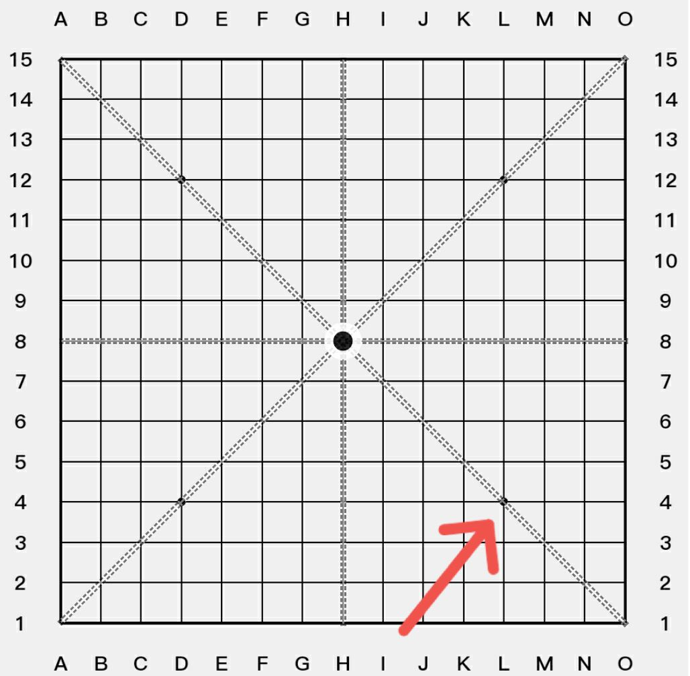
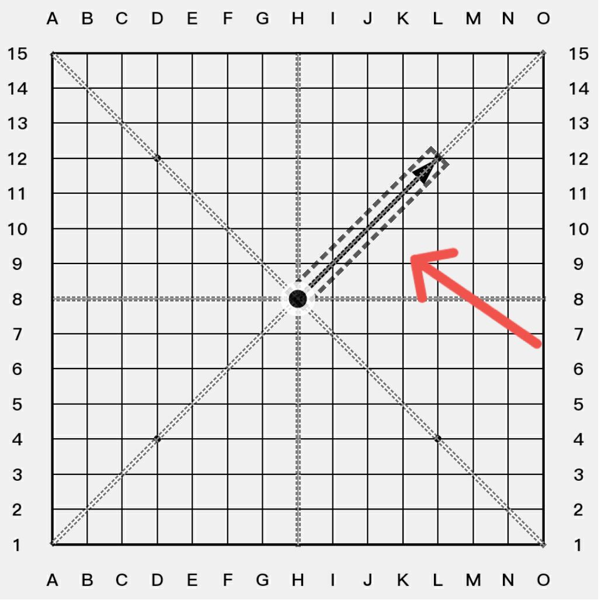
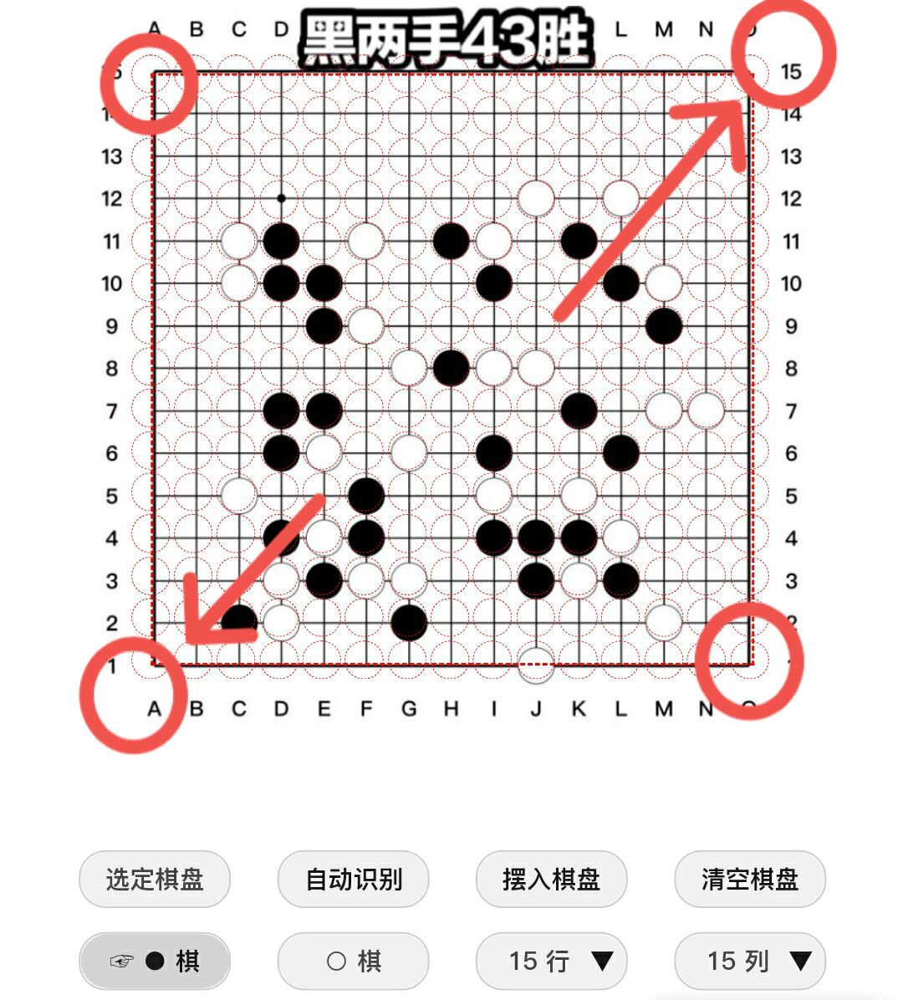
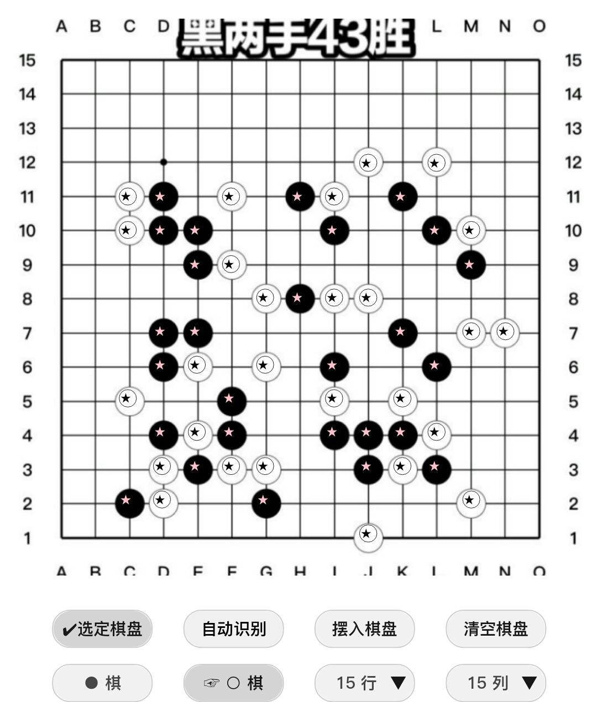

棋盘支持的操作
...
- 触摸操作方式
...
- 单击
- 双击
- 长按
...
- 长按棋盘边框区域，放大/缩小棋盘
- 长按棋盘中间区域，弹出菜单
- 添加图片时，触发拖动操作
- 长按最后一手棋，更改最后一手棋的显示方式
- 拖动
- 双指缩放
...
软件默认是不可以进行缩放操作的，但是在输入棋盘图片时可以缩放，放大图片可以帮你精确定位棋盘坐标。
很多浏览器都默认开启强制缩放功能，这时候缩放功能将不被限制。
- 鼠标操作方式
按钮功能的介绍
...
- 分享图片, 分享原图
...
利用浏览器的分享功能把棋盘图片分享到社交软件。
- 清空标记
- 帮助
- ||<< , <<,>>, >>||
- 设置
...
- 显示手数
- 显示禁手
- 显示路线
PS：显示活三，冲四的路线
- 放大棋盘
- 设置棋盘大小
- 设置棋盘坐标
- 加载按键设置
- 设置按键位置
- 新棋局
- ↔180°， ↗90°
- ←，→，↑，↓
- 黑先，白先
- 找点
...
- VCT选点
...
找出VCT的攻击点。找VCT攻击点 ≠ (找活三级别+找冲四点)
- 做V点
...
找出符合五子茶馆定义的做V点。
做V点：做一手棋，假设对方不防，下一手就可以VCF的点。(这里的VCF，是指两步以上冲四的VCF。不包括黑棋的四三，白棋的四四等...)
- 做43杀
...
找出做43杀点。包括白棋的做44，做单冲四抓禁手。
做43点：做一手棋，假设对方不防，下一手就可以四三胜的点。
- 活三级别
- 活三
- 三三
- 四四
- 长连
- 五连
- 活四
- 冲四
- 眠三
- 解题
...
- 快速找VCF
- 找全VCF
- 找双杀
...
找五子茶馆定义的狭义双杀点。
...
五子茶馆定义的狭义双杀：第一手做两套以上的活三级别杀(第一手不能是直接活三点)，不管对方怎么防守，都可以在下一手开始VCF胜。
PS：上面定义了典型的双杀点。其实还有一些特例也属于狭义双杀点。
...
- 第一手是复活三点
...
前面定义了第一手不能是直接活三点，好像就剩下做43，做VCF的手段了。其实黑棋的活三级别手段还有复活三。
- 对方用了先手冲四
...
如果对方用了先手冲四，下一手不能直接VCF了，那这样好像就不是双杀了。其实不能这样判断，只要挡完冲四后还可以保持活三级别以上的进攻，就还要继续深入计算。直到防守方没有冲四了，再VCF也是狭义双杀。
...
虽然第三手不是VCF,但是第一手还是双杀点
- 大道五目
...
限珠题，解题要求是两颗棋子内43胜。
...
大道五目属于四手五连的一个分支，可以看做简单模式的四手五连
- 三手五连
...
限珠题，解题要求是三颗棋子内五连胜。
...
第一手活三级别，第二手活四级别，第三手五连。
活四级别：指活四，白棋的四四，白棋的单冲四抓禁手。它们距离五连就还差一颗棋子。
- 四手五连
...
限珠题，解题要求是四颗棋子内五连胜。
...
黑先，第一手活三级别，第二手活三级别，第三手活四级别，第四手五连。
 白先，第一手活二级别，第二手活三级别，第三手活四级别，第四手五连。
白先，第一手活二级别，第二手活三级别，第三手活四级别，第四手五连。
- 禁手路线分析
- 防冲四抓禁
- 找VCF防点(深度+1)
...
先找第一套VCF的防点，然后验证下一手棋是否还有VCF，排除还有VCF的防点。
- 找VCF防点(深度+∞)
...
找所有VCF的共防点，会把所有冲四分支冲完为止。
- 坂田三手胜
- VCT
- ⇨VCF
- ◐
...
黑，白轮流添加棋子。会按添加顺序记录棋子，可以设置显示手数。
...
- 点击空格，添加棋子
- 点击棋子，删除最后一手棋
- 双击第n手棋，快速悔棋到第n手
- ●,○
...
自由添加棋子。不会记录棋子的添加顺序，不能显示手数。
...
- 点击空格，添加棋子
- 点击棋子，删除棋子
- ■, ◎, ▲, ✖,
...
设置添加的标记符号，在棋盘空格上面添加标记。
...
- 点击空格，添加标记
- 点击标记，删除标记
- 双击空格(标记)可以弹出编辑标记窗口
在自由添加的棋子上面也可以添加标记
- ←箭头...
...
添加更多的标记
...
- 箭头和线条标记
...
- 添加箭头，线条
...
- 点击棋盘交叉线，选择起点
- 在米字线与棋盘坐标交叉点上面点击，确认结束点

- 选择和删除
...
- 点击线条与棋盘坐标的交叉点，选择线条。有重合的优先选择最上层。
- 在选定的线条与棋盘坐标交叉点上面，点击删除。

PS：箭头标记, 字符标记，棋子，线条标记的图层关系是从上到下的关系，即箭头在最上层。在同一图层的标记当中，后添加的覆盖在上面。
- ABC...， abc...， 123...
- 自定义标记
- ❌, ☆
- 下手为❶
- 重置手数
...
恢复最开始的手数
...

- 输入代码
...
输入棋局的代码，字母不分大小写。输入代码过程中，程序会自动过滤代码中的无意义字符。比如输入“五子棋h8五子棋h9五子棋” = “h8H9” = “H8H9”)
- 输出代码
...
输出的代码分三部分[标准代码部分+{自由添加的黑子坐标}+{自由添加的白子坐标}]
- 输入图片
...
把棋局截图输入棋盘。在手机上面你可以从相册打开图片，也可以拍照打开图片。
...
- 校准图片上面的坐标
...
- 设置行数，列数。
根据棋盘图片可视区域的行数，列数设置。
- 校准棋盘坐标
长按棋盘，触发拖动操作。先让虚线方框对齐棋盘，再微调虚线方框，使得虚线圆圈尽可能对准图片中棋子。
PS：只要对准棋盘两个对角，就可以快速对齐棋盘。点击虚线框边角，可以微调整。有的棋盘图片 棋子不是正对棋盘交叉线，以虚线圆圈对正棋子为准。小屏手机用户可以双指缩放图片，看的更清楚哦

- 自动识别棋子
...
- 点击自动识别
PS：自动识别原理 是通过计算棋子坐标附近的 平均颜色来实现的。所以前面校准棋盘很重要，如果颜色太过丰富的棋盘 是很难识别成功的。
- 验证棋子是否准确
为了方便对比，红色五角星代表黑子，黑色五角星代表白子。自动识别的棋子可能会有误差，这个时候就可以手动编辑一下棋子
- ●：添加，删除黑子
- ○：添加，删除白子

- 摆入棋子
...
如果不是标准的15路棋盘，需要定位天元点。长按(或鼠标右键点击)图片上面的天元点 进行定位。
- 截图
...
快速截图
苹果手机的浏览器上面不能自动下载截图，只能查看截图。如果要保存截图，可以长按图片弹出菜单。
菜单的操作
...
- 触摸上下滑动
- 点击按钮︾，︽滚动菜单
PS：带有▼标记的按钮都可以弹出菜单。在棋盘上面长按(或者鼠标右键)可以弹出菜单。
浏览器的兼容性
...
- 安卓手机推荐使用Chrome, Opera浏览器
- 苹果手机推荐使用Safari浏览器
- 经过测试发现，手机QQ自带浏览器也支持大部分功能
如果有部分功能不能正常运行，请尝试使用推荐的浏览器，并更新到最新版本。
离线工作
...
软件会自动保存你打开过的网页，用来支持离线运行。当你在没有网络的情况下，也可以正常打开软件。你不需要担心更新的问题，直到你下次连上网络时，软件会自动为你下载最新版本。
如何下载app
...
在最新版的浏览器上面，支持将网页保存为一个app。你可以获得类似原生app一样的体验。请参考下面的操作进行设置。
...
- 安卓手机 Chrome 浏览器的设置
- 苹果手机 Safari 浏览器的设置
- 软件运行效果